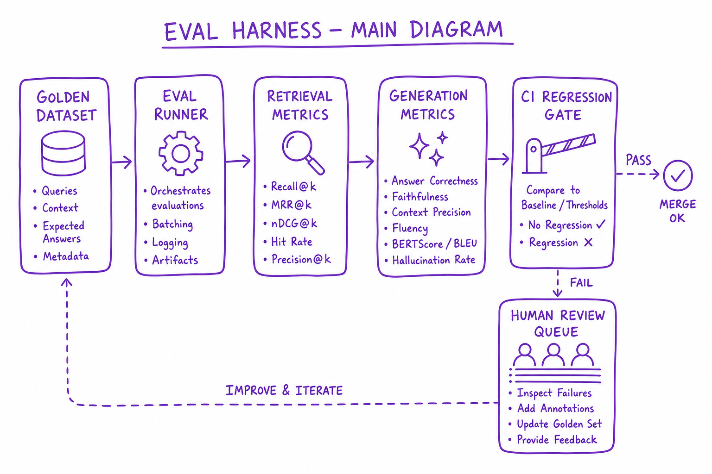
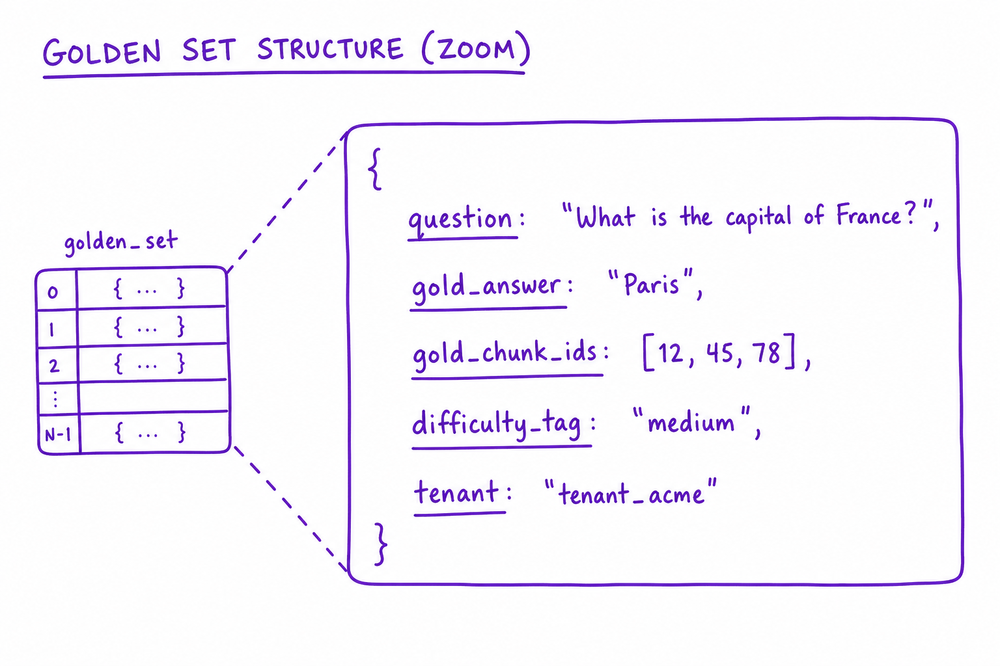
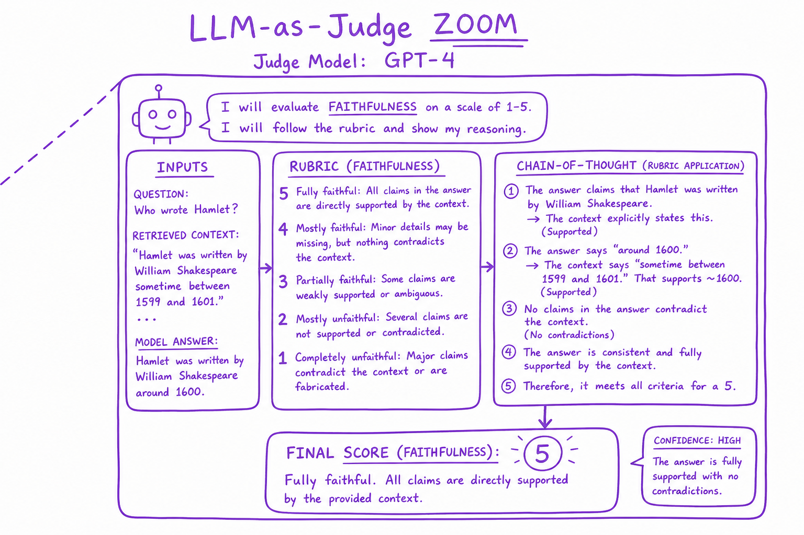

Eval Harness & Golden Sets // Systems
Golden datasets, automated metrics, regression gates, and human eval loops. You cannot improve what you do not measure — especially for non-deterministic LLM outputs.

Eval harness: golden Q&A dataset, retrieval metrics, generation metrics (faithfulness, relevance), CI regression gate, human spot-check queue, production feedback loop.
01 — What & Why
LLM outputs are stochastic. Eval harness provides reproducible quality measurement across prompt, model, and retrieval changes.
01a — Core Concepts
| Term | Definition | Gotcha |
|---|---|---|
| Golden set | Human-labeled Q&A with expected sources | Must be held-out from tuning |
| Faithfulness | Answer supported by context | LLM judge can be biased |
| Regression gate | Block deploy if metric drops | Flaky judges cause false blocks |
01b — API Surface
POST /v1/eval/run
{ suite: "rag-golden-v3", config: { model, retriever, prompt_v } }
-> { recall_at_5, faithfulness, latency_p99, pass: true }
# Ragas
from ragas import evaluate
results = evaluate(dataset=golden, metrics=[faithfulness, answer_relevancy])02 — When to Use / When NOT
| Eval type | Use When | Skip When |
|---|---|---|
| Golden set | Every RAG/agent deploy | Exploratory prototype only |
| LLM judge | Scale beyond manual review | High-stakes legal — need human |
| A/B online | Post-launch optimization | Pre-launch baseline missing |
03 — Architecture
Golden Set -> Eval Runner -> [Retrieval metrics | Generation metrics]
-> Report -> CI Gate (pass/fail) -> Human review queue04 — Deep Dive: Golden Sets

Golden set structure: question, gold_answer, gold_chunk_ids, difficulty tag, tenant
200–500 pairs minimum. Tags: easy/medium/hard, single-hop/multi-hop. Synthetic bootstrap; human label source of truth.
05 — Deep Dive: Retrieval Metrics
Recall@k, MRR, nDCG@k. Requires gold_chunk_ids per question. Run on every index/chunk change.
06 — Deep Dive: Generation Metrics
Faithfulness, answer relevance, context precision/recall. Ragas, DeepEval, Phoenix.
07 — Deep Dive: LLM-as-Judge

GPT-4 judge scores faithfulness 1-5 with rubric and chain-of-thought reasoning
Use stronger model as judge. Rubric in prompt. Correlate judge with human labels monthly.
08 — Deep Dive: CI Regression Gate
Block merge if Recall@5 drops >2% or faithfulness drops >5%. Run on PR with smaller smoke set (50 cases).
09 — Production & Ops
- Weekly human spot-check 50 production queries
- Thumbs down → auto-add to review queue
- Eval dashboard per model version
10 — Where It Shows Up
11 — Common Pitfalls
- Eval leakage — golden Q derived from dev chunks
- Single metric optimization
- Flaky LLM judge without calibration
- No eval before prompt change